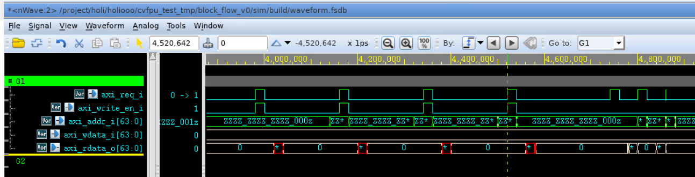
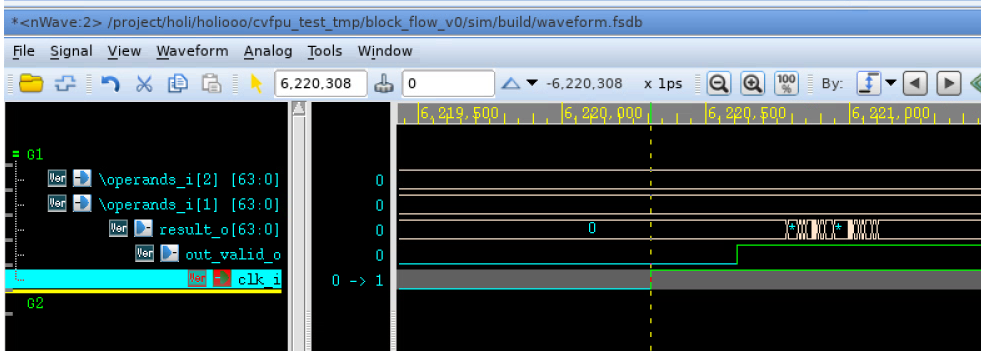
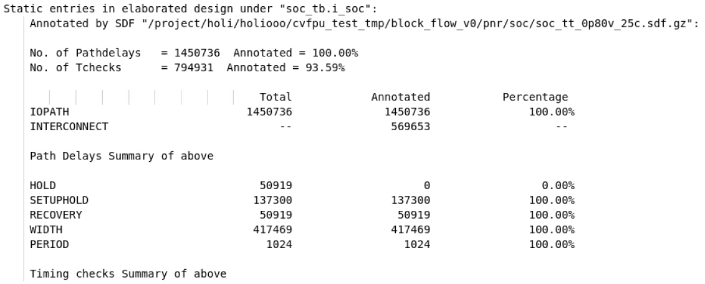
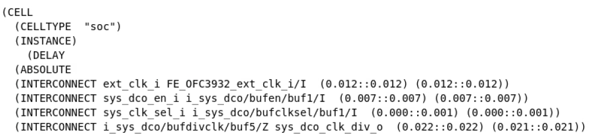

数字子系统仿真指南
TLDR
- 模板文件路径：
/project/common/block_flow_n22/ - 仿真脚本:
sim/Makefile - 前仿命令:
make verdi TOP=<top_module_name>_tb SIM_MODE=RTL - 后仿命令:
make verdi TOP=<top_module_name>_tb SIM_MODE=SYN或SIM_MODE=PR
完成 RTL 设计后，需要通过不同层级的仿真来验证设计的功能和时序是否符合预期。本文档将说明如何使用 Synopsys VCS 进行行为级仿真（前仿）以及门级仿真（后仿），并使用 Verdi 查看波形。
仿真流程主要分为三个阶段：
- 行为级仿真 (RTL Simulation)：验证设计的逻辑功能是否正确。
- 综合后仿真 (Post-synthesis Gate-level Simulation)：验证综合后网表的功能是否与 RTL 一致，并进行初步的时序评估。
- PNR 后仿真 (Post-PNR Gate-level Simulation)：在物理实现后，使用精确的布局布线延时信息进行最接近真实硬件行为的时序仿真。
1. 行为级仿真 (前仿)
行为级仿真在 RTL 设计完成后进行，用于验证设计的逻辑功能是否符合预期。
1.1 模板文件与环境
我们使用一个基于开源 CPU 和 AXI 总线的 SoC 作为模板示例。其文件夹结构如下：
$ROOT
├── src
│ ├── filelist.f # RTL文件列表
│ └── ...
├── sim
│ ├── soc_tb.sv # SoC测试平台
│ ├── init_mem.hex # 内存初始化文件
│ └── Makefile # 仿真脚本
├── syn
│ └── ... # 综合输出目录
├── pnr
│ └── ... # PNR输出目录
├── Makefile # 顶层Makefile
└── ...
集成到 SoC
在进行 SoC 级别的仿真前，请参考系统集成相关章节，将你的模块正确集成到 SoC 中。
1.2 添加源文件
- RTL 文件: 在
src/filelist.f中添加你的子模块源文件路径。 - IP 行为级模型: 如果在子模块中例化了 SRAM 或其他 IP，请在
sim/Makefile:67中通过SRC_LIST += <your_ip_behavior_model>.v的形式添加其行为级模型。
SRAM 行为级模型
当前脚本会自动获取 src/sram/ 路径下所有 SRAM 对应的行为级模型，无需重复添加。
1.3 编写 Testbench
通常情况下，SoC 级别的 sim/soc_tb.sv 已经提供了时钟和复位信号。你只需关注内存初始化文件 sim/init_mem.hex 的内容，该文件包含了 CPU 需要执行的程序。如果你只想仿真子模块，可以在 Testbench 中单独例化你的模块。
1.4 运行仿真
在 sim/ 目录下运行如下指令，即可完成 RTL 编译、仿真并使用 Verdi 查看波形。
# 运行仿真并打开Verdi
make verdi TOP=<top_module_name>_tb SIM_MODE=RTL
# 只运行仿真，不打开Verdi
make vcs TOP=<top_module_name>_tb SIM_MODE=RTL
TOP 变量用于指定顶层 Testbench 模块名。
- SIM_MODE=RTL 指定进行行为级仿真。
仿真脚本会在 sim/ 目录下创建 build/ 文件夹，所有仿真生成的文件（如可执行文件 simv、日志 compile.log、波形文件 waveform.fsdb 等）都存放在此。
build 文件夹
请不要在 build 文件夹中保存任何重要文件！每一次重新编译都会清空该文件夹。
2. 门级仿真 (后仿)
逻辑综合或布局布线后会生成门级网表，我们需要对其进行仿真以验证其功能正确性，并结合 SDF（Standard Delay Format）文件验证时序。
2.1 综合后仿真 (Post-synthesis)
此阶段使用综合后生成的网表和时序信息进行仿真。
在 sim/ 目录下运行如下指令：
- 在默认路径
../syn/<top_module_name>/下查找综合后的网表文件 (<top_module_name>_postsyn.v.gz)。 - 在相同路径下查找对应的 SDF 时序文件 (
<top_module_name>_<corner>.sdf.gz)。 - 包含标准单元库、SRAM 等 IP 的 Verilog 模型。
- 在仿真中进行 SDF 时序反标。
网表与 SDF 文件路径
脚本只会搜索默认位置的网表和 SDF 文件。如果你的文件位置或命名有变，请手动修改 sim/Makefile。
综合后仿真的时序意义
综合后的网表没有时钟树等真实的布线信息，因此其时序仿真结果参考意义有限，主要用于验证网表的功能正确性。
2.2 PNR 后仿真 (Post-PNR)
此阶段使用布局布线后生成的网表和更精确的时序信息进行仿真，其结果最接近芯片的实际表现。
在 sim/ 目录下运行如下指令：
../pnr/<top_module_name>/ 下查找 PNR 后的网表 (..._hier_postpnr.v.gz) 和 SDF 文件，并进行时序反标。PNR 后仿真是验证芯片时序收敛情况的重要手段。
2.3 后仿的关键注意事项
2.3.1 内存加载时机
在后仿中，SoC 的启动流程如下：上电复位后，BootROM 中的固化程序会首先运行，它的一项任务是将主内存（Main Memory）的基地址处前 256 bit 区域清零。之后，CPU 才会从主内存取指执行程序。
因此，我们必须在主内存基地址清零操作完成之后、CPU 从主内存取第一条指令之前，将我们的测试程序 (init_mem.hex) 加载到主内存中。这通过修改 soc_tb.sv 中的一个延迟语句实现。
// sim/soc_tb.sv
...
`ifdef GATE_SIM // or POST_SIM
...
rstn_i = 1'b1;
#4515352 // Modify this! <--- 需要修改这里的延迟值
// Load memory content after zeroing
$sformat(hex_filename, "../build/init_mem_0.hex");
i_soc.i_main_mem_wrapper.\gen_main_mem[0].main_mem_inst .loadmem(hex_filename);
...
`endif
...
如何确定延迟值？
- 运行一次后仿，打开波形。
- 观察 AXI 总线上对主内存的访问信号。你会看到在复位结束后，有连续的几次写操作（
axi_write_en_i为高），这就是 CPU 在根据 BootROM 里的指令清零内存。 - 找到最后一次写操作完成的时刻，和第一次读操作发起的时刻。
- 将
soc_tb.sv中的延迟值修改为这两个时刻之间的一个时间点。
下图展示了这一过程：CPU 发起了四次地址递增的写 0 操作，然后发起了第一次读操作。loadmem 的时机应该这两次操作之间的窗口期内（如位于 4,600,000 ps）。

内存文件自动切分
你只需要准备一个完整的 sim/init_mem.hex 文件。仿真脚本会自动调用 split_mem.py 脚本，根据主内存的 Bank 数量和大小，将其切分成多个小文件供仿真时加载。
2.3.2 查看后仿波形
成功的后仿（特别是带 SDF 反标的）波形具有以下特征，这些是时序信息被正确加载的体现：
- 非理想时钟边沿：时钟信号的上升沿和下降沿不会出现在整数时间点（如 10000 ps, 20000 ps），而是带有精确延时的小数时间点。
- 信号毛刺 (Glitch)：由于不同路径的延时差异，组合逻辑的输出在稳定前可能会出现短暂的毛刺。
下图展示了一个典型的后仿波形，光标所在位置 6,220,308 ps 并非整数，clk_i 在此时刻发生跳变，且 result_o 在 out_valid_o 跳变为 1 后仍有密集毛刺，这表明 SDF 反标成功。

2.3.3 检查 SDF 反标成功率
在运行完 PNR 后仿后，除了通过观察波形特征来判断外，我们还必须检查 VCS 生成的 SDF 反标报告，以量化地确认反标的成功率。
该报告位于 sim/build/sdfAnnotateInfo 文件中。打开该文件，你会看到类似下面的摘要信息：

报告中列出了路径延时（Pathdelays）和时序检查（Tchecks）的反标数量和百分比。我们需要重点关注 Annotated 的百分比。通常情况下，整体反标率不应低于 97%。
反标率低的一个常见原因是 SDF 文件中的时序角（corner）与仿真脚本中请求的角不匹配。在我们的 soc_tb.sv 中，SDF 反标任务写为：
"MINIMUM" 就是指定 VCS 从 SDF 文件中读取哪个时序角的数据进行反标。该参数有四个主要的可选值：MINIMUM, TYPICAL, MAXIMUM, TOOL_CONTROL。如果不指定该参数，VCS默认使用 TYPICAL。
因此，我们需要确认 Innovus 工具导出的 SDF 文件中包含了我们指定的角。SDF 文件中的延时值通常以 (MIN:TYP:MAX) 的三元组格式表示。

例如，上图中 (INTERCONNECT ... (0.012::0.012)) 的格式代表 (MIN::MAX)，中间的 TYPICAL 值是缺失的。在这种情况下，如果仿真脚本中指定了 TYPICAL 或者使用默认设置，反标就会失败或反标率极低。因此，必须确保 soc_tb.sv 中指定的角与 SDF 文件中实际存在的角一致，才能获得有效的后仿结果。
2.4 Verdi 波形查看技巧
- 保存信号: 对于需要频繁查看的信号，在 Verdi 中将它们添加到波形窗口后，可以使用快捷键
Shift + s将当前信号列表保存为.rc文件。 - 恢复信号: 再次打开 Verdi 时，点击波形区域，使用快捷键
r可以快速加载上次保存的.rc文件，恢复信号列表。